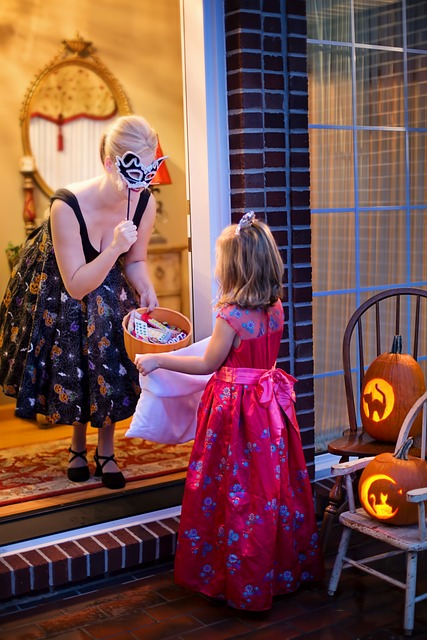

| Tradition | Origin Place | Origin story | |
|---|---|---|---|
| Carving Jack-o’-Lanterns | Ireland | It is allegedly based on a legend about a man named Stingy Jack who repeatedly trapped the Devil and only let him go on the condition that Jack would never go to Hell. But when Jack died, he learned that Heaven did not want his soul either, so he was forced to wander the Earth as a ghost for eternity. The Devil gave Jack a burning lump of coal in a carved-out turnip to light his way. Locals eventually began carving scary faces into their own turnips to frighten away evil spirits. | |
| Seeing Ghosts | Indo-Europe (Celts) | The festival of Samhain marked the transition to the new year at the end of the harvest and beginning of the winter. Celtic people believed that during the festival, spirits walked the Earth. Later on, Christian missionaries introduced All Souls’ Day on November 2, which perpetuated the idea of the living coming into contact with the dead around the same time of year. |
|
| Wearing Scary Costumes | Indo-Europe (Celts) | In order to avoid being terrorized by all the evil spirits walking the Earth during Samhain, the Celts donned disguises in order to confuse the spirits and be left alone. | |
| Trick-or-treating | Indo-Europe (Celtic) / Scottish / America | There is much debate around the origins of trick-or-treating, but generally there are three theories. The first theory suggests that during Samhain, Celtic people would leave food out to appease the spirits traveling the Earth at night. Over time, people began to dress as these unearthly beings in exchange for similar offerings of food and drink. The second theory speculates that the candy boon stems from the Scottish practice of guising, which is a secular version of “souling.” During the Middle Ages, generally children and poor adults would collect food and money from local homes in return for prayers for the dead on All Souls’ Day. Guisers dropped the prayers in favor of non-religious practices with the inclusion of songs, jokes, and other “tricks.” A third theory argues that modern American trick-or-treating stems from “belsnickeling,” a German-American Christmas tradition where children would dress in costume and then call on their neighbors to see if the adults could guess the identities of the disguised. In one version of the practice, the children were rewarded with food or other treats if no one could identify them. |  |
| Bobbing for Apples | Rome | The game of bobbing for apples has been a staple at Halloween parties for many years, but its origins are more rooted in love and romance. The game traces back to a courting ritual that was part of a Roman festival honoring Pomona, the goddess of agriculture and abundance. While multiple versions existed, the gist was that young men and women would be able to predict their future relationships based on the game. When the Romans conquered the British Isles in 43 AD, the Pomona festival blended with the similarly timed Samhain, a precursor to Halloween. | |
| Candy Apples | Rome | For centuries, people have been coating fruit in syrup as a means of preservation. But during the Roman festival of Pomona, the goddess was often represented by and associated with apples; her name derives from the Latin word for apple “pomum” and the fruit is at the heart of harvest celebrations. It is believed that candy apples were invented accidentally in 1908 by William W. Kolb, a candymaker in Newark, New Jersey. As the story goes, Kolb was experimenting with red cinnamon candy to sell at Christmastime and he dipped apples on sticks into the red glaze and put them in his shop window to showcase his new candy. But instead of selling the candies, he ended up selling the apples to customers who thought they looked good enough to eat. They became fashionable treats for Halloween starting in the early 1900s and they remained popular up until the 1970s. |
|